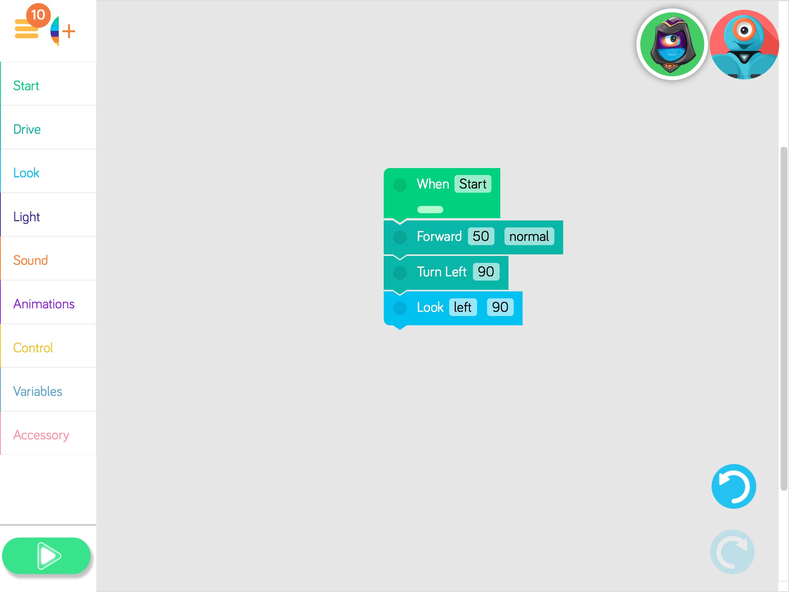
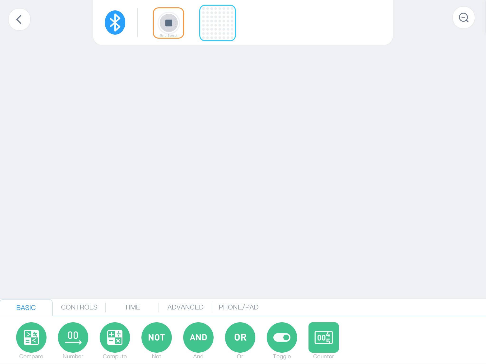
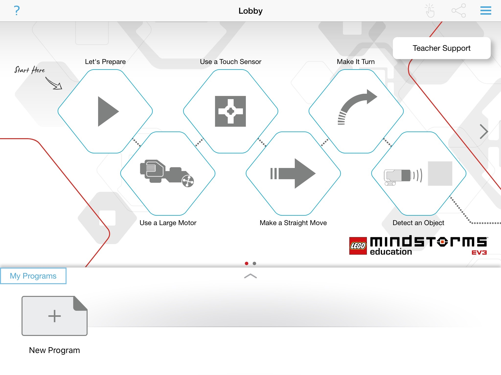
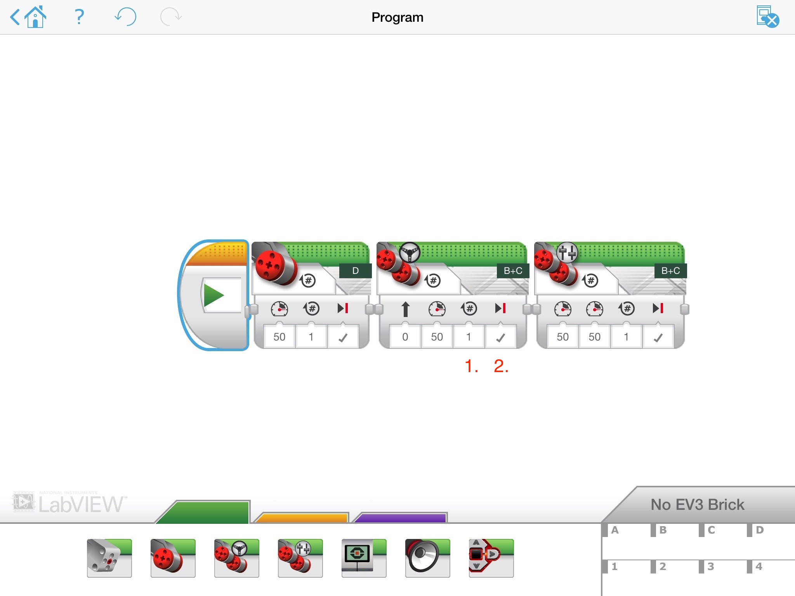

Tervetuloa kurssille. Tällä sivulla löydät materiaalit jotka käytetään Vantaan aikuisopiston kurssilla Robotiikaa aikuisille. Kurssissa ei ole lähtötasoa vaan voit aloittaa ihan alusta, Kubolla. Jos koodaaminen on sinulle tututtu voit siirtyä vativimpiin tehtäviin. Katso esim Arduino tai Sonic Pi.
Materiaali seuraa kolme polkua, Olen aloittelija, Osaan jotain ja Osaan ohjelmoida. Jos jokin kohta tuntuu liian helpolta tai haastavalta voit hyvin siirtyä eteenpäin.
Olen aloittelija
Tämä osio on ajateltu niille jotka eivät ole aikaisemmin olleet ohjelmoinnin tekemisissä. Jos alku on liian helppoa voit siirtyä testamaan Dashia.
Alku: Kubo
Kubo
- Tutustu paloihin jotka ovat pussissa.
- Mitä eroa on sinisillä ja punaisilla nuolilla ja paloille missä on pallo? Miten palat missä on pallo liittyy paloihin missä on nuoleja?
Kubolla on kaksi mustipaikka koodille, yksi siniselle ja toinen punaiselle.
Koodi mitä haluaa että Kubo muistaa sijoitetaan "pallo"-palikoiden sisään. Ohjelma aktivoidaan laittamalla Kubo samanvärisen nuolo-palikan päälle. Kubo-robootti muistaa kaksi ohjelmaa, sinisen ja punaisen.
Kun ohjelmoi Kuboa kääntymään, oikealle tai vasemmalle, niin se kääntyy ja ottaa askeleen eteenpäin.
Loopia toistaa tietyn pätkän koodia, rakenne on seuraavanlainen:

Kuvassa Kubo suorittaa 4 kertaa komennot mene askeleen eteenpäin, käänny vasemalle ja ota askel.
Kuin Kubo lukee koodia niin se loistaa violetin värisenä. Sinisenä se odottaa, vihreänä värisenä se suorittaa ohjelmaa ja jos se on punaisena sitä ahdistaa. Voi olla ettei koodissa ole käytetty loppu-palikkaa. Jos Kubo vaikuttaa siltä että Kubo ei tee sitä mitä sen pitäisi niin tyhjennä sen muistia ottamalla pää pois kehosta.
Ohjelma voi olla noin 20 palikkaa pitkä. Pituuden voi kiertää pysähtymällä Kuboa toisen värin nuolo-palikkaan, jolloin se jatkaa tai suoraan liittämällä nuoli-palikkaa toiseen koodipätkää.
- Tee ohjelma missä Kubo ajaa 5 kertaa eteenpäin.
- Tee ohjelma missä Kubo ajaa neliössä.
- Palikoissa missä on kaksi nuolta mitkä menee ympäri voidaan hyödyntää loopina.
- Tee ohjelma missä Kubo ajaa neliötä käyttäen loopia.
- Ottakaa Kubo tuubista kartta. Tehtäsi on seuraava:
- Olet jalankulkija ja seuraatte liikennesääntöjä, kadusta yli mennään suojatietä pitkin.
- Aloita ruudusta B1.
- Siirry Kioskille (E1) ja Leipomoon (H1) yhdellä pätkällä koodia.
- Leipomosta siirryt Ravintolaan (C7) siten että koodissa käytät looppia.
- Ravintolasta siirryt Lipputangolle (I tai J 10) siten että teet ylimääräisen kierroksen istutuksien (E8) ympäri.
- Lipputangosta siirryt ruutuun I4 katsomaan maalausta joka on ruudussa I5 (Koska Kubo kääntyy niin kuin kääntyy, suunta ja askel , tämä saatta tuntua vaikealta. Tee se niin hyvin kuin pystyt.), ja sieltä aloitusruutuun B1. Selvitkö yhdellä koodinpätkällä? Vai jaatko koodin kahteen osaan?
Jatko: Dash ja Makeblock
Dash
- Ota Dash ja iPadi. iPadilla on kansio nimeltään Robotiikka tai Pelit. Käynnistä Blockly niminen sovellus.
- Painamalla Play nappia pääset eteenpäin sovelluksessa.
- Dashin saa päälle virtanapista, valkoinen nappi kyljestä.
- Dashin saa yhdistetty näytön oikeasta yläkulmasta.
- Jos haluat voit tehdä oman profiilin Manage Profilesin alla.
- Siirry tilaan joka näyttää tältä.

- Vasemmalla on ohjelmia mitkä käytetään. Mitä löydät Startin alla? Entäs Drive? Mistä löydät looppeja? Mitä löydät Variablesin alla?
- Variables eli muuttujat ovat tietolaatikkoja, joihin tallennetaan tietoa jota ohjelma tarvitsee myöhemmin.
- Blockeja (näitä värikkäitä laatikoita) saat käyttöön vetämällä ne oikealla olevaan työtilaan. Laatikot pitävät olla yhdessä jotta ohjelma on yhtenäinen.

- Jos haluat muuttaa muuttajan arvoa, niin paina muuntajan laatikkoa ja muuttakaa arvoa. Saat näkyviin seruaavantapainen ruutu.

- Tee seuraavaa:
- Ohjelma missä Dash ajaa eteenpäin noin 1 metri, ja peruuttaa takaisin lähtöpaikalle.
- Tee seuraavaksi ohjelman missä Dash ajaa neliötä loopin avulla.
- Lisää lopuksi Controlin alla Repeat X times tai Repeat forever palikka.
- Tee ohjelma joka Dash suoriittaa monta kertaa peräkkäin.
- Hyvä, seuraavaksi tehdään musiikkia.
- Kiinnitä Xylofoni ja Nuija Dashiin.
- Lookin alla saat Dashin pään siirtymään ylös ja alas, vasemmalle ja oikealle.
- Ohjelmoi Dashiä niin että hän soittaa pienen kappaleen. Muistakaa Loop- ja Repeat-palikat. Wait, joka on Controlin alla, saattaa myös olla hyödyllinen.
- Paljon mitä liitetään robotiikkaan koskee valintoja. Koodissa valintoja tehdään käyttäen if-lausetta (jos - niin). Jos jokin ehto toteutuu niin tee seuraavaa. Harjoitellaan if-lauseen käyttöä seuraavaksi
- Tee ohjelma missä Dash ajaa ympäri luokkaa osumatta esteisiin. Ajattele että jos edessä on este niin tee...
- Kun perusohjelma on valmis voit kehittää sitä. Miten Dash kannattaa liikkua jotta hän pääsee esteestä ohi? Sanooko tai vilkuuko Dash kun hän huomaa esteen?
Dash ja muuttujat
Muuttujat (variables) ovat tietolaatikoita mihin ohjelma tallentaa tietoa, mitä käytetään myöhemmin ohjelmassa.
- Muuttujat löydät Variablesin alla. Vetämällä sen työpöydälle voit muokata sitä painamalla blokkia.
- Normaalissa ohjelmointikielessä muuttajille annetaan nimi, Dashin Blocklyssa muuttujia on viisi: appelsiini, banaani, jne.
- Muutujalle tietyn arvo, tallentaa arvon jollekin toisella nimellä, antaa satunnaisarvon sekä antaa arvon jostain Dashin sensoreista.
- Harjoitellaan muuttajien käyttöa tekemällä seuraavat harjoitukset
- Arvotaan muuttujalle arvon, ja Dash ajaa niin monta neliötä (tai muita kuvioita).
- Itseohjautuva Dash. Kun hän huomaa esteen niin hän arpoo lähteekö hän peruttamaan oikealle tai vasemmalle.
- Kuten yllä mutta jos Dash huomaa että perässä on joku niin hän ajaa nopeampaa, kunnes takana ei enää ole ketään.
- Arvo muuttajalle arvon ja sen perusteella Dash soittaa jonkun melodian Xylofonilla.
Makeblock
- Makeblock koostuu paloista mitkä kiinnitetään toisiinsa magnettien avulla. Palikat ovivat joko kiinnittää suoraan toisiinsa tai sitten kaapeleiden avulla. Palikoita on kolme eri laista:
- vihreät antavat sähköa ja mahdollistavat kommunikaation, mm Bluetooth ja Wifi.
- oranssit ohjaavat, mm nappeja, ääni- ja kosteusmittarin.
- siniset näyttävät dataa tai tekee toiminnon, mm näyttö, LED valoja ja ohjaimia moottoreihin.
- Tutustu mitä laatikossa on. Jos kaipaat niin kannen sisäpuolella on ohjekirja.
- Jokainen piiri mitä rakennat tarvitsee sähköä. Jotta piiri toimii niin ajattele että signaali menee vasemmalta oikealle. Katso kuvaa.

- Rakenna yksinkertainen piiri missä käytät Power, Temp Sensor ja Display. Temp Sensor vaatii mittarin. Saatko näkyviin lämpötilan?
- Jotta saa piirit keskustelemaan keskenään käytetään Wireless-T ja Wireless-R palikat. Liitä ne ensin yhteen, ne vilkuu hetken, kun valo palaa ne ovat valiina käyttöön.
- Rakenna piiri joka koostuu kahdeosta osasta. 1. osa koostuu Power ja Knobista, 2. osassa on 8x8 LED valo. Mihin liität Wireless-R ja Wireless-T palikat jotta saadaan signaali kulkemaan 1. osasta 2. osaan?
- Ennen kuin otetaan ohjelmointia mukaan niin rakenna seuraavat kaksiosaiset piirit:
- Liiketunnstin, joka sytyttää LED-nauhaa kun PIR-sensori havaitsee liikehdintää.
- Kosteusilmaisin, joka pitää ääntä jos kun kosteus on tarpeeksi korkea. Testaa laittamalla kosteusilmasin veteen.
- Moottori jota ohjataan Light Sensorin avulla. Mitä eroa on DC Motor Driver ja Servo Driverin välillä?
Makeblock ja ohjelmointia
- Seuraavaksi katsotaan miten voidaan ohjelmoida ja tehdä piireistä monipuolisempia.
- Lataa/ käynnistä Makeblockin Neuron sovellus tabletilla.
- Valitse Classic Verison, se toimii Creative Lab Kitin kanssa.
- Käytä Bluetooth-palikaa jotta saat yhteyden piiriin.
- Näytön yläreunassa näet palikoita mitkä käytät. Alareunassa löydät komentoja.

- Vetämällä palikat alas työpöydälle voit ohjelmoida niitä.
- Painamalla palikan kuvaa voit muuttaa sen asetuksia. Vetämällä palikasta tai toimiosta toiseen saat ne liitettyä yhteen. Painamalla viivaa saat sen poistettua ruksista.
- Rakenna Bluetooth, Power, Gyro Sensor ja 8x8 LEDia käyttäen piiriä joka näyttää sydäntä jos piiri on suorassa.

- Rakenna jotain seuraavista ideoista
- Auto joka ajaa itsekseen, varoen esteitä. Saatko siihen käytettyä PIR Sensoria? Sound Sensoria? Light Sensoria?
- Kastelujärjestelmän joka kastelee kasvit kun multa on kuivaa.
- Diskovalojärjestelmää joka muuttaa valaistusta äänenkorkeuden mukaan.
- Mitä muuta hauskaa keksit?
Osaan jotain
Lego Mindstorms
Lego Mindstorms on Legon kehittämä robtiikka-sarja. Legot ovat monelle tuttuja jotka madaltavat kynnystä rakentaa. Lisäksi sensorit ovat laadukkaita. Lego Mindstroms voidaan ohjelmoida joko palikoilla, blokeilla tai kirjoittamalla Pyhonia.
Mottoreita kytketään portteihin A - D ja sensorit portteihin 1 - 4.
Mindstorms ja blokit
- Perusnäkymä Mindstorms apissa on seuraava:

- Paina "New Program" niin pääset alkuun.
- Valikot löytyvät alhaalta: Vihreän alla ohjataan mottoreita, ääntä ja näyttöä, Keltaisen alla on Loop, If-lauseet, odotus ja jos haluaa tehdä lisä funktioita, Violetin alla on kommenttityökalu.

- Ensimmäiseksi rakennetaan robottia joka ajaa neliötä.
- Mottoreita voidaan ohjata kolmella eri blokeilla.

- Miten ne eroaa toisistaan? Mitkä ovat niiden hyödyt ja mahdolliset rajoitteet?
- Kuvassa on merkattu 1. ja 2. Miten moottorin käyttäytymien muuttuu muuttamalla vaikon olevia valintoja?
- Mottoreita voidaan ohjata kolmella eri blokeilla.
- Miten saat robootin ajamaan etenpääin ja kääntymään? Miten saat sen ajamaan neliötä ilman ja loopin kanssa? Miten saat sen tekemään asian loputtomasti?
- Miten hyödynnät gyro-sensoria kun robottii yrittää väistää estettä?
- Kun käytät valo-sensoria, voit mitata valon arvoja. Teet sen valitsemalla robotissa valikon missä saat esille sensoreiden raaka data, vastaavia arvoja saat näkymiin ohjelmointisovelluksessa.
- Miten hyödynnät sen tiedon ja ehto-lauseen?
Lego ja Python
Legon oma ohjelmointi-ympäristö käy nopeasti hankalaksi jos haluaa rakentaa suurempaa projektia. Jotta saamme muuttujat käyttöön meidän on pakko ohjelmoida kirjoittaen. Lego Mindstormseja voidaan ohjelmoida Pythonilla.
- Siirry osoitteeseen https://education.lego.com/en-us/support/mindstorms-ev3/python-for-ev3. MicroSD korteilla on valmiiksi EV 3 MicroPyhton Image.
- Tarvitset ladata ja asentaa Visual Studio Code editorin ja Lego Education EV3 lisäkirjaston.
- Legon omat ohjevideot on hyvä katsoa läpi.
- Visual Studio Code (Steps 4-5) videon lopussa on Expanding the example program. Muista tehdä se.
- Sivulla on Download the EV3 MicroPython Getting Started Guide (incl. API and sample code). Avaa se ja käytä apuna.
- Tee seuraavat tai vastaavat rakennelmat.
- Robotin joka ajaa neliötä.
- Robotin joka ajaa ympäri huonetta väistäen esteitä. Miten saat siihen liitettyä gyroa?
- Robotin joka valo-sensorin avulla ajaa rataa pitkin.
- Kappaleesta 9 ja eteenpäin löydät esimerkkejä ja sivilla 54 löydät sisällysluettelon missä on listattuna kaikki komennot mitkä voit käyttää.
Vaativampaa: Arduino
Seuraavat työt ja komponenteillä saa helposti vaativimia, ja helpompia töitä tehdyksi. Ohjelmointi tapahtuu kirjoittaen, jolloin oma tietokone on pakko olla mukana.
Arduino
Arduino on mikrokontrolleri johon liitetään komponenttejä. Vantaan Robotiikkakeskuksessa on Mehackitin kehittämä rakennussarja. Mene osoitteeseen learn.mehackit.org, rekisteröi ja valitse Elektroniikkaa ja ohjemlointia Arduinoilla (Maker Kit).
Aloita luvusta 1 ja asenna Adruino IDE.
Materiaalia kannattaa edetä järjestyksessä. Jotkut asiat vievät enemmän aikaa kuin toiset. Haaste tehtävät voit jättää tekemättä, jos siltä tuntuu. Luvut 2 - 5 luovat sen perustan mitä tarvitset tekmään projektityön, joka on luku 6. Materiaali on luotu lukion kurssille, tarkoitaa että materiaalia on noin 40 tunnille. Teet sen minkä ehdit.
Koodausta: Code.org ja Sonic Pi
Tässä osiossa löydät sivuja missä käsitellään koodausta. Näitten ratkaisemiseksi suosittelen tietokonetta.Code.org
Code.org on nuorille suunnattu ohjelmointi sivusto. Kun lähtee rakentamaan voi hyvin aloittaa tästa. Mene Code.orgin sivulle ja aloita Kurssista 4.
Jos tehtävät tuntuvat liian helpolta niin hyppää muutaman yli kunnes löydät sinulle sopivia tehtävän.
Sonic Pi
Sonic Pi on sovellus missä koodaat musiikkia. Tyyli on vapaa, se voi olla jazzia, klassista tai vaikka EDM:ää. Lataa omalle koneelle sopiva versio ja aloita opiskelu tutoriaalin avulla.
Mitä jatkoksi?
Paljon joka liittyy robotiikkaan liittyy myös ohjelmointiin. Tietyllä alustalla rakentaminen, esim Arduino tai Raspberry Pi, vaatii tietyn ohjelmointikielen. Jotta ohjelmointi sujuu ohjelmointikielellä ei ole väliä. Seuraavilla sivuilla ovat hyviä harjoittelemaan ohjelmointia:
- Helsingin yliopiston avoin JavaScript Mooc
- Elements of AI. Avoin verkkokurssi joka käsittelee tekoälyä.
- Codecademy. Tällä on paljon joka on ilmaista. Jotkut polut ja kurssit maksavat.
Lisäksi löytyy Helmetistä hyviä kirjoja jotka käsittelevät robotiikka ja tekoälyä. Ray Kurzweilin The singularity is near on klassikko. Suosittelen, kirjaa löytyy vain englanniksi. Pekka Vahvansen Kone kaikkivaltias on kriittinen muistutus meille kaikille robotiikasta ja uhkista.
- Maija-Riitta Ollilla, Tekoälyn etiikka
- Timo Siukonen ja Pekka Neittaanmäki, Mitä tulisi tietää tekoälystä
- Pentti O. A. Haikonen, Tietoisuus, tekoäly ja robotit
- Ray Kurzweil, The singularity is near : when humans transcend biology
- Ray Kurzweil, How to create a mind: the secret of human thought revealed
- Pekka Vahvanen, Kone kaikkivaltias : kuinka digitalisaatio tuhoaa kaiken meille arvokkaan